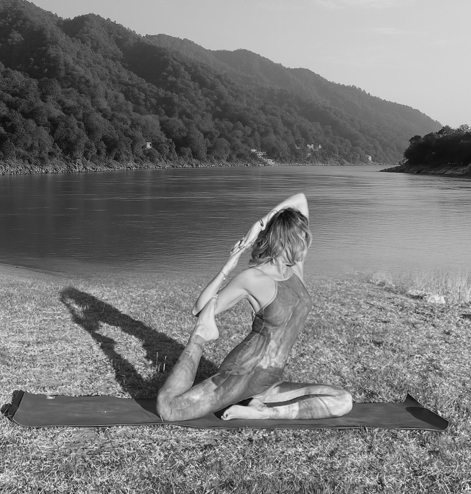
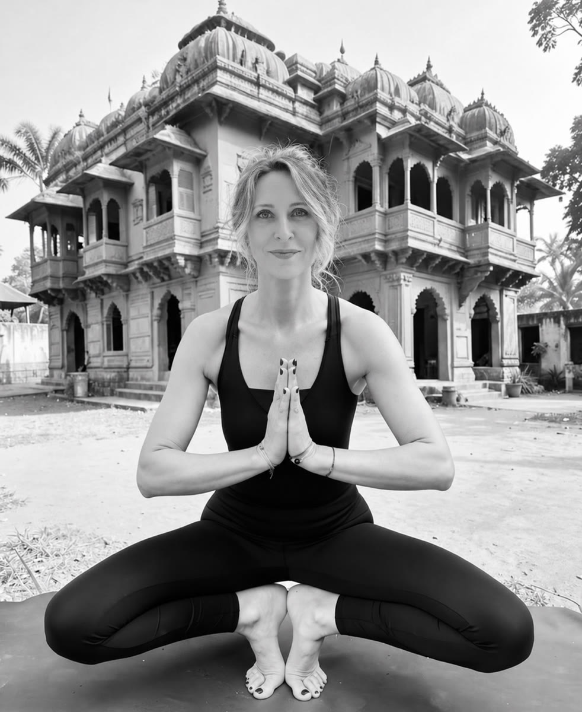

Inner Yoga · Cuerpo · Mente · Alma
Una práctica
para volver a ti.
Yoga, respiración y meditación para conocerte, cultivar presencia y practicar desde quien eres hoy.
Practica conmigoSobre mí
Soy Verónica Sukha
Más de 30 años de práctica y enseñanza. Una forma personal de acompañar a cada persona según su cuerpo y su momento.
- 30 años de experiencia
- Formación en India
- Certificación Yoga Alliance
- Formación en meditación Vipassana
- Yoga de las escrituras de los Vedas
«El yoga se vive diferente en cada persona. Por eso, tu práctica también debería ser única.»

Método interior
Cuerpo · Mente · Cuerpo sutil
Trabajamos con Hatha Yoga, Vinyasa, Pranayama y prácticas de consciencia para crear una hoja de ruta personal que puedas llevar también fuera de la esterilla.
Cuerpo
Movilidad, fuerza, flexibilidad y consciencia corporal.
Mente
Meditación Vipassana, presencia y gestión del estrés y las emociones.
Cuerpo sutil
Respiración, energía y una experiencia más profunda del ser.
Practica conmigo
Individual · Grupos · Empresas
Sesiones diseñadas según tus objetivos, necesidades y momento vital.
Explora
Para practicar por tu cuenta
Habla conmigo
Pregúntame en voz alta y te contesto con mi voz.
Respiración · Pranayama
Cuando cambia tu respiración, cambia tu estado.
Las asanas
Las 30 posturas del hatha yoga, por grupos.
Medita conmigo
Dos meditaciones guiadas con mi voz.
Baños de gong
Sonido, vibración y quietud.
La app
Llévame en el móvil.
Baño de gong
Una experiencia para los sentidos.